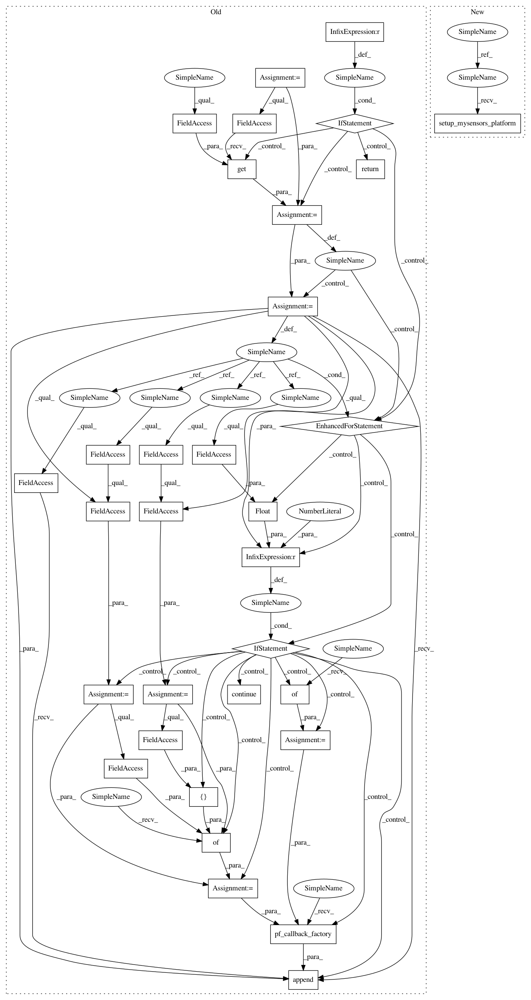

8775c54d29a4adcc11a55c4a37db7da54eccc6e7,homeassistant/components/notify/mysensors.py,,get_service,#Any#Any#Any#,12
Before Change
def get_service(hass, config, discovery_info=None):
Get the MySensors notification service.
if discovery_info is None:
return
platform_devices = []
gateways = hass.data.get(mysensors.MYSENSORS_GATEWAYS)
if not gateways:
return
for gateway in gateways:
if float(gateway.protocol_version) < 2.0:
continue
pres = gateway.const.Presentation
set_req = gateway.const.SetReq
map_sv_types = {
pres.S_INFO: [set_req.V_TEXT],
}
devices = {}
gateway.platform_callbacks.append(mysensors.pf_callback_factory(
map_sv_types, devices, MySensorsNotificationDevice))
platform_devices.append(devices)
return MySensorsNotificationService(platform_devices)
class MySensorsNotificationDevice(mysensors.MySensorsDeviceEntity):
After Change
def get_service(hass, config, discovery_info=None):
Get the MySensors notification service.
new_devices = mysensors.setup_mysensors_platform(
hass, DOMAIN, discovery_info, MySensorsNotificationDevice)
if not new_devices:
return
return MySensorsNotificationService(hass)
In pattern: SUPERPATTERN
Frequency: 4
Non-data size: 32
Instances
Project Name: home-assistant/home-assistant
Commit Name: 8775c54d29a4adcc11a55c4a37db7da54eccc6e7
Time: 2017-08-25
Author: marhje52@kth.se
File Name: homeassistant/components/notify/mysensors.py
Class Name:
Method Name: get_service
Project Name: home-assistant/home-assistant
Commit Name: 1d615ea6c3a5f9b3ae6481b827919f04f23c09ce
Time: 2017-08-25
Author: marhje52@kth.se
File Name: homeassistant/components/notify/mysensors.py
Class Name:
Method Name: get_service
Project Name: home-assistant/home-assistant
Commit Name: 1d615ea6c3a5f9b3ae6481b827919f04f23c09ce
Time: 2017-08-25
Author: marhje52@kth.se
File Name: homeassistant/components/climate/mysensors.py
Class Name:
Method Name: setup_platform
Project Name: home-assistant/home-assistant
Commit Name: 8775c54d29a4adcc11a55c4a37db7da54eccc6e7
Time: 2017-08-25
Author: marhje52@kth.se
File Name: homeassistant/components/climate/mysensors.py
Class Name:
Method Name: setup_platform
Project Name: home-assistant/home-assistant
Commit Name: 8775c54d29a4adcc11a55c4a37db7da54eccc6e7
Time: 2017-08-25
Author: marhje52@kth.se
File Name: homeassistant/components/notify/mysensors.py
Class Name:
Method Name: get_service